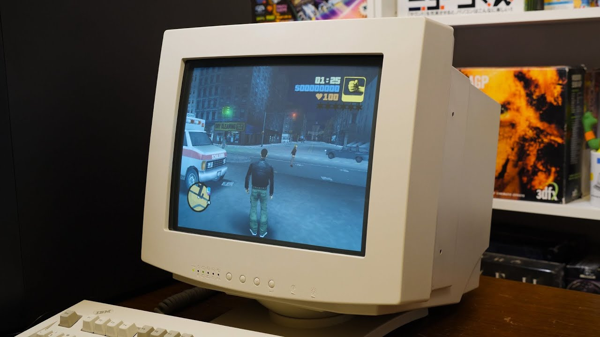

History of Video card Graphics
Standards such as MDA, CGA, HGC, Tandy, PGC, EGA, VGA, MCGA, 8514 or XGA were introduced from 1982 to 1990 and supported by a variety of hardware manufacturers. 3dfx Interactive was one of the first companies to develop a GPU with 3D acceleration (with the Voodoo series) and the first to develop a graphical chipset dedicated to 3D, but without 2D support (which therefore required the presence of a 2D card to work). Now the majority of modern graphics cards are built with either AMD-sourced or Nvidia-sourced graphics chips.Until 2000, 3dfx Interactive was also an important, and often groundbreaking, manufacturer. Most graphics cards offer various functions such as the accelerated rendering of 3D scenes and 2D graphics, MPEG-2/MPEG-4 decoding, TV output, or the ability to connect multiple monitors (multi-monitor). Graphics cards also have sound card capabilities to output sound along with the video for connected TVs or monitors with integrated speakers. Within the industry, graphics cards are sometimes called graphics add-in-boards,abbreviated as AIBs,with the word "graphics" usually omitted
Who invented the graphics card?
In the 1980s, IBM was the first company to develop the graphics card. The monochrome display adapter and the color graphics adapter were plug-in devices that attached to the CRT.
Different types of Graphic Cards
Integrated

If you have a computer but did not assemble it yourself or upgrade it in any way, chances are that it uses an integrated graphics card to display images on your screen. When a graphics card is described as integrated, it refers to the card's relationship with the computer's motherboard. Integrated graphics cards, sometimes known as onboard graphics cards, are the default option that comes with standard motherboards. An integrated graphics card can be upgraded, but it requires plugging a new graphics card into your computer's motherboard and having the computer ignore the old card. Integrated graphics cards are the least powerful variety overall, at least compared to the technology that exists simultaneously. If you have an integrated graphics card and want to play the latest video games, you will need to upgrade.
PCI
PCI graphics cards are cards that use the PCI slots on your motherboard to connect to your computer. PCI graphics cards are usually a little bit out of date, if not extremely so. However, many older motherboards have PCI slots and lack newer varieties of connections. For this reason, there is still a reason to buy a PCI graphics card, but only if you are trying to upgrade an older system.
AGP
AGP graphics cards are named for the same thing PCI cards arethe slot they connect to on a motherboard. AGP cards can have four speeds, the fastest being 8x. However, if your motherboard only supports a lower speed, such as 1x, 2x, or 4x, your graphics card will behave as if it is of a slower speed, rather than its real speed. AGP connections are not quite as fast as PCI-E slots due to technological limits, and as a result, will not be developed to run at higher speeds. However, like PCI cards, they are more widely compatible than the most cutting-edge cards.
PCI-E
PCI-E cards are the most advanced, connecting to the motherboard's PCI-E slot. PCI-E graphics cards can be accelerated to 16x. In addition, a motherboard with more than one PCI-E slot can have more than one PCI-E graphics card connected to it and combine their power. However, this is a rare scenario. This can also cause compatibility problems if not planned out correctly; certain motherboards work better with specific brands of a PCI-E video card.
Computer-generated motion graphics
Computer- generated animations "are more controllable than other, more physically based processes, like constructing miniatures for effects shots, or hiring extras for crowd scenes, because it allows the creation for images that would not be feasible using any other technology." Before computers were widely available, motion graphics were costly and time-consuming, limiting their use to high-budget filmmaking and television production. Computers began to be used as early as the late 1960s as super computers were capable of rendering crude graphics. John Whitney and Charles Csuri can be considered early pioneers of computer aided animation.
In the late 1980s to mid-1990s, expensive proprietary graphics systems such as those from British-based Quantel were quite commonplace in many television stations. Quantel workstations such as the Hal, Henry, Harry, Mirage, and Paintbox were the broadcast graphics standard of the time. Many other real-time graphics systems were used such as Ampex ADO, Abekas and K-Scope for live Digital video effects. Early proprietary 3D computer systems were also developed specifically for broadcast design such as the Bosch FGS-4000 which was used in the music video for Dire Straits' Money for Nothing. The advent of more powerful desktop computers running Photoshop in the mid-90s drastically lowered the costs for producing digital graphics. With the reduced cost of producing motion graphics on a computer, the discipline has seen more widespread use. With the availability of desktop programs such as Adobe After Effects, Discreet Combustion, Adobe Premiere Pro and Apple Motion, motion graphics have become increasingly accessible. Modern character generators (CG) from Aston Broadcast Systems and Chyron Corporation's incorporate motion graphics.
The term "motion graphics" was popularized by Trish and Chris Meyer's book about the use of Adobe After Effects, titled Creating Motion Graphics. This was the beginning of desktop applications which specialized in video production but were not editing or 3D programs. These new programs collected together special effects, compositing, and color correction toolsets, and primarily came between edit and 3D in the production process. This "in-between" notion of motion graphics and the resulting style of animation is why sometimes it is referred to as 2.5D.
Motion graphics was the last major aesthetic innovation of the nineteenth century to fully emerge during the twentieth. Converging in the final decades of the twentieth century, broadcast design, mobile graphics, the absolute film, titles, or even simply animation have all been used to identify what would become motion graphics. Any history of the field requires a consideration of how its aesthetics and the varied uses common to contemporary motion graphics first emerged from experiments with kinetic abstraction in the late nineteenth and early twentieth centuries. The nexus of abstract films synchronized geometries with live action outside the framework of narrative, the conventions of synchronized sound and image, and finally the development of kinetic typography shows that motion graphics are more than animated graphic designs. This field began with the first abstract films made by the Futurist painters in 1909, but these experiments, now lost, did not spring suddenly into being. They emerge from a larger context, one that also produced abstract art generally, and helped establish the foundations for other, superficially unrelated fields such as the light show performances common to spectacular events such as the opening ceremonies for the Olympic Games, or the fireworks shows produced nightly at the Walt Disney theme parks. Central to this development is the impact of synaesthesia on art in the early twentieth century: the influence of visual music is visible in commercial motion graphics, most obviously in television commercials, animated logos and graphics, and in the title sequences created for feature films. The aesthetic principles that organize and structure the relationship of image to soundtrack, originates with the earliest abstract films, and before them, with color music. Motion graphics emerged after centuries of earlier developments and a general cultural aspiration to create a visual art comparable to music: literally a visual music. The history of color music, the first attempt at creating such an art, and its more contemporary descendant visual music, established the ways that sound and image can be related to each other in a visual medium such as motion pictures. This connection to abstract art creates that works transcendent or spiritual contentby considering the development of color music the origins of these meanings necessarily emerge as part of understanding the development and organization of the abstract films that are the foundation for motion graphics. While the linkage of sound and color is an arbitrary phenomenon, in the most successful examples of abstract animation by artists such as Oskar Fischinger, or in title sequences for feature films, creates the illusion of a direct, natural link comparable to lip-sync between sound and image. The art historians term for this kind of connection is synaesthetic.
Adobe After Effects can be used for all common video editing tasks necessary for producing broadcast quality, high-definition video. it is a generally used software applications for video editing on mac OS or Windows computers. Premiere Pro is used for editing videos, commercials and other film, television, and online video. It is a comprehensive video editing software application and is also available as part of the Adobe Creative Cloud set of applications. Motion Graphics templates give Premiere Pro editors the power of After Effects motion graphics, packaged up as templates with easy to use controls designed to be customized in Premiere Pro.[8] Motion graphics continue to evolve as an art form with the incorporation of sweeping camera paths and 3D elements. Maxon's CINEMA 4D, plugins such as MoGraph and Adobe After Effects. Despite their relative complexity, Autodesk's Maya and 3D Studio Max are widely used for the animation and design of motion graphics, as is Maya and 3D Studio which uses a node-based particle system generator similar to Cinema 4D's Thinking Particles plugin. There are also some other packages in Open Source panorama, which are gaining more features and adepts in order to use in a motion graphics workflow, while Blender integrates several of the functions of its commercial counterparts. Many motion graphics animators learn several 3D graphics packages for use according to each program's strengths. Although many trends in motion graphics tend to be based on a specific software's capabilities, the software is only a tool the broadcast designer uses while bringing the vision to life. Leaning heavily from techniques such as the collage or the pastiche, motion graphics has begun to integrate many traditional animation techniques as well, including stop-motion animation, frame by frame animation, or a combination of both.
Kapwing's Studio is a fully browser-based video editor. Within the Timeline, creators can splice and combine video clips, trim and cut inline, add transitions, overlay text and images, generate subtitles, and upload music.